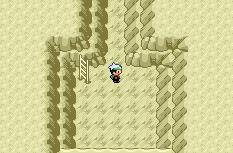

Ho-oh
 De: La Frikipedia, la enciclopedia extremadamente seria.
De: La Frikipedia, la enciclopedia extremadamente seria.
| De la serie bichos dentro de bolas:
|
| Ho-Oh (joujou)
|
|
|
| Nombre
|
Ho-Oh (joujou)
|
| Especie
|
Animal Pokémon, Pajarraco en llamas del demonio Fénix
|
| Apariencia
|
Fénix en llamas
|
| Hábitat natural
|
La isla de la montaña grande
|
| Localización
|
El paraíso en llamas cielo
|
| Tipo
|
 
|
| Habilidad
|
Encender barbacoas Chamuscar y apagar (Ilógico)
|
| Pokemonización
|
Viene del pajarraco que se tragó fuego del infierno
|
| Número
|
Indefinido ¿¡Quien coño se va a poner a contar los cartuchos en el que sale!?
|
Ho-Oh, (o joujou en cristiano)es un pokémon surgió del infierno de esta manera:
Un día, un programador de Pájaro loco y se le ocurrió algo, si en efecto, se le ocurrió hacer un nuevo pokémon, chanta clouse Ho-Oh. Así concluye la historia de este tremendo pájaro en llamas.
Cómo atraparlo
Muy fácil, primero dirígete a la isla que tiene como roca un ombligo (verás que por dentro es todo blanco). Cuando te lo encuentres por dentro, te mirará raro. Coges un cubo de agua y se lo tiras, por la ley del agua sobre el fuego, el pokémon debería hacer una supernova caer al suelo. Seguidamente, lánzale una Poké Ball y listo. Ya tienes un pajarraco sin fuego Ho-oh.
Dónde atraparlo
Dentro de un cartucho de pokémon, Ediciones oro, plata, oro corazón, plata alma, esmeralda, rubí, zafiro,todas las rocas del mundo, joder.
Avistamientos
- En los juegos de pokémon
follándose a Lugia.
- En el anime llevándose a los niños malos al infierno.
- En vídeos.
- En cosas rojas.
- Luchando con Lugiaaa.
- En una montaña de color
mierda roja.
- En una joya.
- En un peluche.
- En tu culo.
- En algún sitio.
- Allí
- En Madrid.
- En Barcelona.
- En Japón.
- En Moviplaya (donde van los más viciados y más frikis).
- En el infierno.
- En Jupiter.
- En una hoguera.
- En tu mente.
- En tu imaginación.
Y muchos lugares más que se me han olvidado
Siglas de H.O-O.H
- Hombre Ordinario con Orégano y Hachís
- Hormona obesa de ornitorrinco Homosexual
- Homosexual Obsesivo de Ojos Heavys
PD: el - significa de, con...
Ataques de Ho-oh
- Asa barbacoas
 El interior de
Roca Ombligo, da un gustazo y una buena olor...
- Chamuscarrorr
- Vuelo flimájoro
- Fuegosabrado
- Fuegosagrado (el otro)
Lametada Llamarada- Fuego
putrefacto Fatuo
- Surf fugaz
- Ataque arena ardiente "quetequemalapolla"
- Ataque de meteorito fugaz magia borraz
- AdiosLugia
- T odi'o lug-kia
- Psico
pollaz fugaz
- Tu madre
- Ascuas (golpe critico)
¿Sabías que...
- ...quemó la Frikipedia cuando la denunciaron y la Frikipedia cerró, en realidad, porque Ho-Oh la quemó?
- ...Ho-Oh es un pájaro envuelto en llamas?
- ...Ho-Oh adora este artículo?
- ...yo tampoco lo sabía?
- ...y que tú tampoco?
- ...Ho-oh volverá a quemar la Frikipedia, pero este artículo perdurará?
- ...Ho-oh nunca quemará el mundo?
- ...a no ser que el tío mas gordo del mundo se tire un peo y Ho-Oh lo utilice como combustible?
- ...tú no lo capturarás en tu vida?
- ...yo sí?
- ...se ha visto quemando tu casa?
- ...ya la ha quemado?
- ...mañana te quemará el ordenador con lo que miraste esto?
- ...a mí no?
- ...lo de 5 líneas arriba es mentira?
- ...lo de 1 linea arriba también lo es?
- ...cuando te queme Ho-Oh te llevará al cielo y no al infierno?
- ...Ho-oh es bueno pero antes no?
- ...lo de 3 lineas arriba va a ser al revés?
- ...Ho-Oh resucitará?
- ...Ho-oh es capaz de matar a Bill Gates?
- ...Ho-oh asa barbacoas de carne de pikachu?
- ...Ho-oh quemó tu casa?
- ...y la mía no?
- ...ni la de tu amigo?
- ...pero sí la de tu enemigo?
- ...todo esto lo quemará Ho-oh y no se podrá leer?
- ...Ho-oh es piromaníaco?
- ...Yu-Gi-Ho-oh es la única carta Pokémon Legendario/Divine/Beast?
- ...El primer episodio en que sale Ho-oh estaba transformado en supersaiyan?
- ...Pero cuando salió en la segunda generación dejó de ser supersaiyan?
- ...y por eso le pusieron el peor nombre de todos los pokémons?

|
|
|
Autor(es):
- Genericool
- El-Ultimaitium
- Alex64646
- Titofer
- Rayquaza
- Reader pkmn
Frikipedia 2005-2016, Licencia
GFDL 1.2 - Extraído por FrikiLeaks